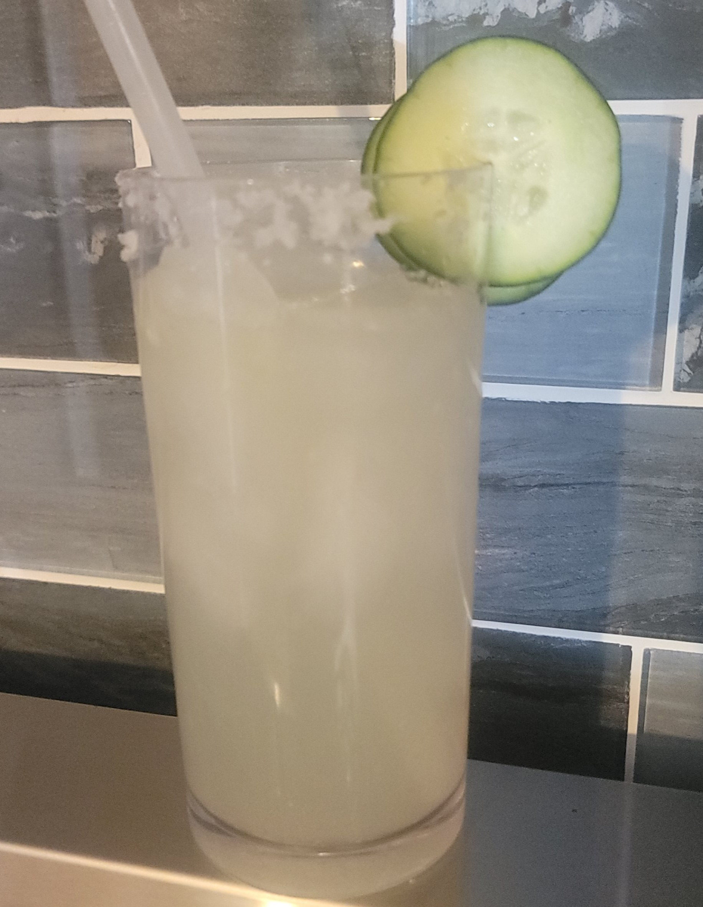

Gin Gin Mule
Ingredients
- 2 ounces gin
- 1/2 ounce lime juice
- 4 ounces ginger beer

**for extra cucumber taste you can muddle cucumbers with the vodka and lemon juice in shaker cups and strain into glass before adding soda water.
**muddle mint in the rum, lime juice, and simple syrup. Shake in shaker cups with ice, strain into glass and top with soda water.
**muddle mint in the gin, lemon juice, lime juice, and simple syrup. Shake in shaker cups with ice, strain into glass and top with soda water.
**muddle mint in the whiskey, lemon wedges, and simple syrup. Shake in shaker cups with ice, strain into glass and top with soda water.
**muddle mint in the lemon juice, and simple syrup. Pour gin in shaker cups with ice, shake, strain into glass.
**muddle cucumber and basil in shaker cup. Add vodka, lemonade and Lime juice with ice. Shake well. Strain into glass.
**Shake in shaker cups with ice, strain into glass.
Muddle cucumber, lime, and simple syrup, add gin and shake.
Add gin, lemon juice, and simple syrup to a shaker with ice and shake until chilled. Strain into sugar rimmed glass and top with Champagne.
Add all three ingredients to shaker cup, muddle fresh basil leaves. Shake with ice ice and strain into glass
Add all three ingredients to shaker glass, muddle basil. Shake with ice and strain into glass
you can also add a small bit of hersheys chocolate syrup if you like it sweeter